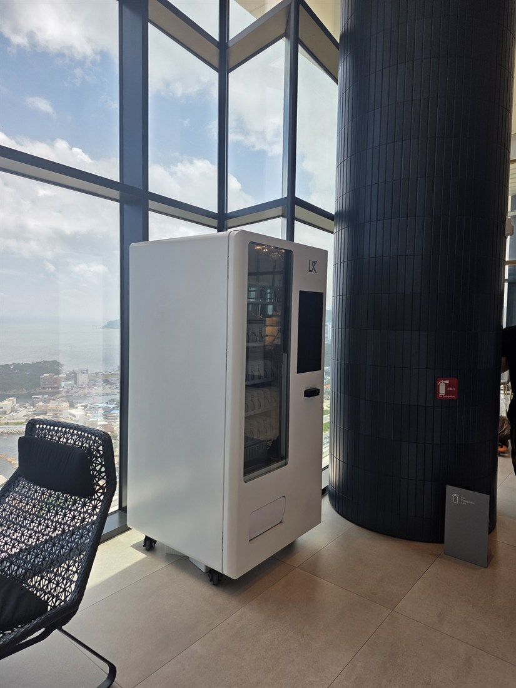

2026.08.26 · 부산
부산 호텔 스마트 자판기 설치 — 고층 라운지 24시간 무인 판매

오늘은 부산의 한 호텔 고층 라운지에 스마트 무인자판기를 설치했습니다. 바다와 도심이 내려다보이는 창가 자리라, 로비 미관을 해치지 않는 화면형 스마트 자판기로 세팅했습니다. 투숙객이 늦은 시간에도 음료·간식을 사려면 무인자판기가 딱 맞습니다.
호텔·숙박시설에 잘 맞는 이유 — 프런트 인력이 줄어드는 야간에도 24시간 판매되고, 카드·간편결제라 관리가 편합니다. 투숙객 만족도도 올라갑니다.
부산 호텔에 설치한 스마트 자판기 구성
냉장자판기로 생수·이온음료·탄산·커피 음료를 시원하게, 간식·컵라면·세면 소모품을 더한 구성입니다. 카드·삼성페이·카카오페이·네이버페이·QR을 모두 받아 현금 없이 운영되고, 매출·재고는 원격으로 확인됩니다.
부산, 이런 곳에 잘 됩니다
호텔·리조트·게스트하우스, 해운대·광안리·서면 상권, 관광안내소·전망대, 사우나·찜질방·헬스장, 병원·학교·사무실까지 문의가 많습니다. 실내 스마트 자판기부터 실외 무인자판기까지 자리에 맞춰 설치합니다.
부산 서비스 지역
해운대·수영·남구·부산진·중구·동래 등 부산 전역을 방문 설치합니다. 호텔·리조트·관광시설 로비 문의를 환영합니다.
부산 호텔 무인자판기 설치 · 해운대 스마트 자판기 설치 등
부산 무인사업, 이렇게 시작하세요
설치비는 무료입니다. 로비·라운지 미관과 동선까지 보고 자리를 잡아 드리고, 반입·결제 연동까지 챙깁니다. 스마트 자판기 구입·구매도, 임대·렌탈도 가능합니다.
📞 부산 호텔 스마트 자판기 설치 상담 010-6832-1994